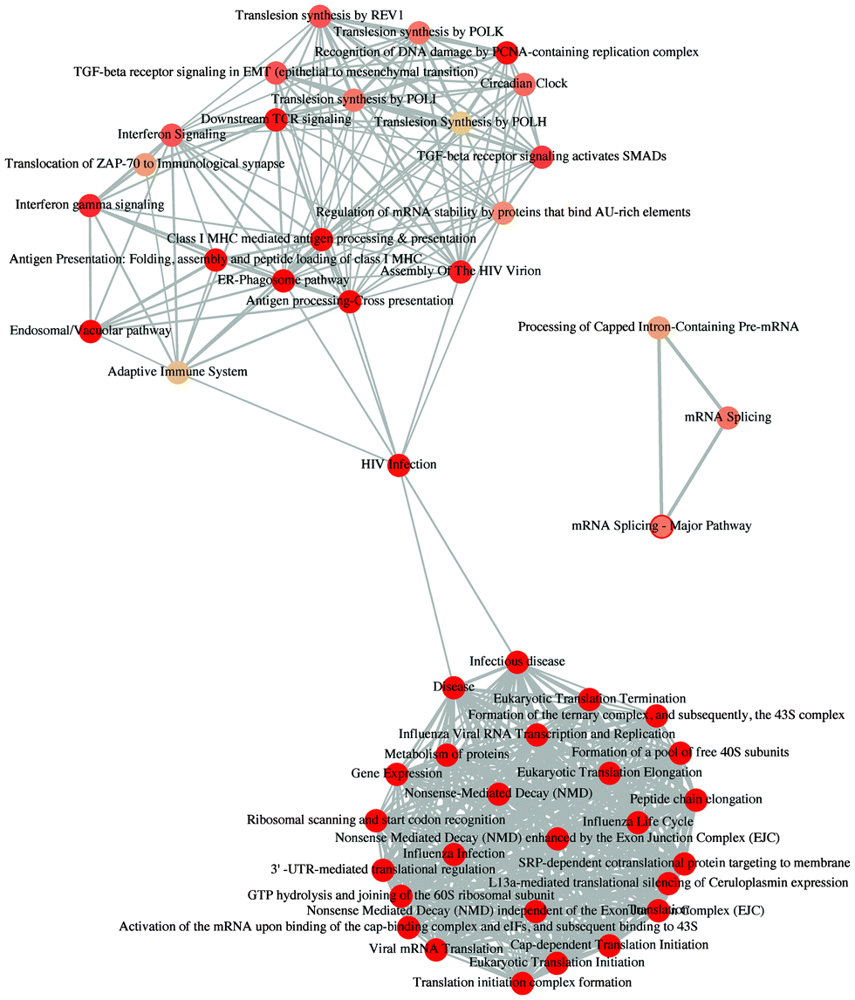

This package implements five methods proposed by Resnik, Schlicker, Jiang, Lin and Wang respectively for measuring semantic similarities among DO terms and gene products. Enrichment analyses including hypergeometric model and gene set enrichment analysis are also implemented for discovering disease associations of high-throughput biological data.
DOSE is released within the Bioconductor project and the source code is hosted in GitHub.
Author
Guangchuang Yu, School of Public Health, The University of Hong Kong.
Citation


Please cite the following article when using DOSE:
Yu G, Wang L, Yan G and He QY*. DOSE: an R/Bioconductor package for Disease Ontology Semantic and Enrichment analysis. Bioinformatics, 2015, 31(4):608-609.
Featured Articles

Find out more on Featured Articles.
Installation
Install DOSE is easy, follow the guide in the Bioconductor page:
## try http:// if https:// URLs are not supported
source("https://bioconductor.org/biocLite.R")
## biocLite("BiocUpgrade") ## you may need this
biocLite("DOSE")
Overview
Semantic similarity measurement
- DO term semantic similarity
- Gene semantic similarity
Enrichment Analysis
- DO (Disease Ontology)
- NCG (Network of Cancer Genes)
- DisGeNet (gene-disease and SNP-disease associations)
Visualization
- barplot
- cnetplot
- dotplot
- enrichMap
- gseaplot
- simplot
- upsetplot
Find out details and examples on Documentation.
Projects that depend on DOSE
Bioconductor packages
- bioCancer: Interactive Multi-Omics Cancers Data Visualization and Analysis
- ChIPseeker: ChIPseeker for ChIP peak Annotation, Comparison, and Visualization
- clusterProfiler: statistical analysis and visualization of functional profiles for genes and gene clusters
- debrowser: Interactive Differential Expresion Analysis Browser
- facopy: Feature-based association and gene-set enrichment for copy number alteration analysis in cancer
- ReactomePA: Reactome Pathway Analysis
Find out more on github.
Feedback
- Please make sure you follow the guide before posting any issue/question
- For bugs or feature requests, please post to github issue
- For user questions, please post to Bioconductor support site and Biostars. We are following every post tagged with DOSE
- Join the group chat on and